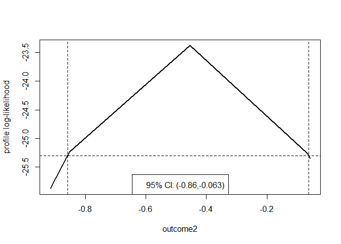

Profiling a Log-likelihood to Calculate Confidence Intervals
This package computes confidence intervals based on profile log-likelihood for one or more parameters in a user-supplied fitted multi-parameter model. The functionality of the main function, profileCI(), is like that of confint.glm, which calculates confidence intervals for the parameters of a Generalised Linear Model (GLM).
Speed of computation can be improved by starting the profiling from limits based on large sample normal theory. The accuracy of the limits can be set by the user. A plot method visualises the log-likelihood and confidence interval. Cases where the profile log-likelihood flattens above the value at which a confidence limit is defined can be handled, leading to a limit at plus or minus infinity. Disjoint confidence intervals will not be found.
An example
We illustrate the use of profileCI() using an example from the help file for stats::glm().
## From example(glm)
counts <- c(18, 17, 15, 20, 10, 20, 25, 13, 12)
outcome <- gl(3, 1, 9)
treatment <- gl(3, 3)
glm.D93 <- glm(counts ~ outcome + treatment, family = poisson())
# Intervals based on profile log-likelihood
confint(glm.D93)
#> Waiting for profiling to be done...
#> 2.5 % 97.5 %
#> (Intercept) 2.6958215 3.36655581
#> outcome2 -0.8577018 -0.06255840
#> outcome3 -0.6753696 0.08244089
#> treatment2 -0.3932548 0.39325483
#> treatment3 -0.3932548 0.39325483To calculate these intervals using profileCI we provide a function that calculates the log-likelihood for this Poisson GLM for an input parameter vector pars.
poisson_loglik <- function(pars) {
lambda <- exp(model.matrix(glm.D93) %*% pars)
loglik <- stats::dpois(x = glm.D93$y, lambda = lambda, log = TRUE)
return(sum(loglik))
}The function profileCI() profiles the log-likelihood, with respect to one parameter at a time. For a given value of this parameter the log-likelihood is maximised over the other parameters. The aim is to search below and above the MLE of the parameter until the profile log-likelihood drops to a level corresponding to the limits of the confidence interval of a desired confidence level.
Two arguments can be used to affect the speed with which the confidence limits are obtained: mult determines the amount, as a percentage of the estimated standard error of the estimator of the parameter of interest, by which the value of the parameter is incremented when profiling. Larger values of mult should result in a faster calculation but increase the risk that one of the optimisations required will fail. If the argument faster = TRUE then the searches for the lower and upper confidence limits are started from limits based on the approximate large sample normal distribution for the maximum likelihood estimator of a parameter, rather than the maximum likelihood estimate. The defaults are mult = 32 and faster = TRUE.
library(profileCI)
prof <- profileCI(glm.D93, loglik = poisson_loglik)
prof
#> 2.5% 97.5%
#> (Intercept) 2.6958271 3.36656379
#> outcome2 -0.8576884 -0.06255514
#> outcome3 -0.6753594 0.08244109
#> treatment2 -0.3932489 0.39324886
#> treatment3 -0.3932489 0.39324886We can visualise the profile likelihood for a parameter using a plot method.
plot(prof, parm = "outcome2")
To obtain smooth version of this plot, we call profileCI() with mult = 8 and faster = FALSE, but this is much slower calculation.
prof <- profileCI(glm.D93, loglik = poisson_loglik, mult = 8, faster = FALSE)
plot(prof, parm = "outcome2")
By default, once it has been determined that a limit lies between two values of the parameter, quadratic interpolation is used to estimate the value of the limit. If a specific degree of accuracy is required then this can be set by passing a positive tolerance epsilon to the itp function in the itp package.
An alternative to passing the log-likelihood function using the argument loglik is to provide the same function via a logLikFn S3 method for the fitted model object.
Installation
To get the current released version from CRAN:
install.packages("profileCI")To install the development version from GitHub:
remotes::install_github("paulnorthrop/profileCI")